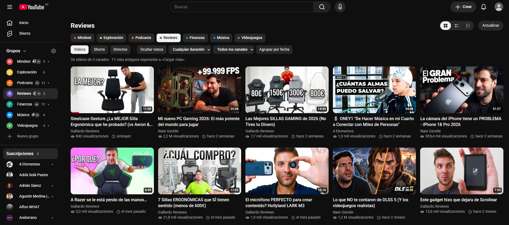
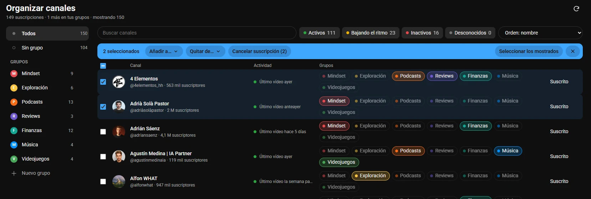
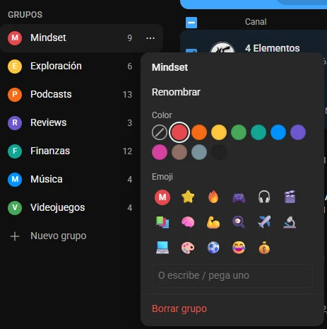
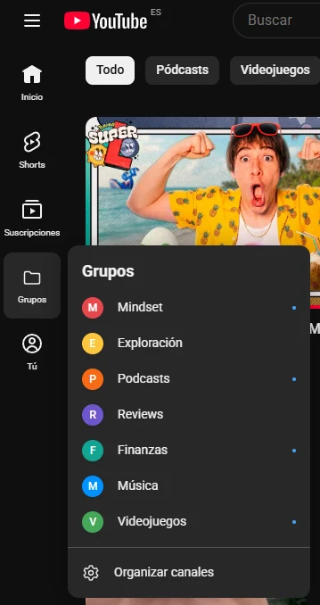
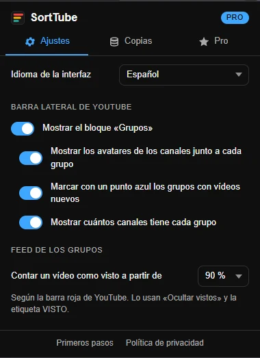

Tus suscripciones de YouTube, por fin ordenadas
SortTube reparte tus canales en grupos —Noticias, Música, Aprender…— y da a cada grupo su propio feed, dentro del propio YouTube.
Gratis · Funciona en Chrome, Edge y Brave · Sin cuentas ni rastreo

Funciones
Todo lo que sigues, en orden
El feed de Suscripciones de YouTube lo mezcla todo. Con SortTube eliges qué ver y cuándo.
Grupos en la barra lateral
Tus grupos, justo encima de Suscripciones, con un punto azul cuando hay algo nuevo.
Un feed para cada grupo
Solo esos canales, lo más nuevo primero. Vídeos, Shorts, directos y estrenos, cada uno con su etiqueta.
Ordena en minutos
Todas tus suscripciones en una lista: un clic mete un canal en un grupo. Selecciona varios a la vez para ir más rápido.
Haz limpieza
Un semáforo de actividad muestra qué canales se han parado, y puedes desuscribirte de varios a la vez.
Vista previa realPRO
Pasa el ratón por una miniatura y mira el vídeo de verdad, con sonido, volumen y barra de tiempo.
Tu progreso, de YouTube
Barras rojas de progreso y «visto» sacados de tu historial de YouTube. Oculta lo que ya has visto.
Organizador
¿Cientos de canales? Unos minutos.
Todas tus suscripciones en un sitio, listas para ordenar.
- Un clic mete un canal en un grupo; otro clic lo saca.
- Selecciona varios (Mayús para un rango) y añádelos todos, o desuscríbete de golpe.
- Semáforo: activo, bajando el ritmo o inactivo, para saber qué dejar.
- Arrastra canales a un grupo, y grupos para reordenarlos.

Grupos
Cada grupo, a tu manera
Cámbiale el nombre, ponle un color o un emoji, y reconócelo de un vistazo.
- Renómbralo ahí mismo.
- Colores y emojis para distinguir cada grupo.PRO
- Arrástralos para ordenarlos como quieras.

Barra lateral
Tus grupos, siempre a mano
Justo encima de Suscripciones en la barra lateral de YouTube, y a un paso del ratón cuando la barra es estrecha.
- Un punto azul marca los grupos con vídeos nuevos.
- Con la barra estrecha, pasa el ratón por «Grupos» para abrirlos.
- Pliega el bloque o ve al organizador con un clic.

A tu manera
Ajustes que no estorban
El botón de la extensión abre un panel de ajustes: idioma, qué muestra la barra lateral, cuándo un vídeo cuenta como visto, copias de seguridad y Pro.
- 15 idiomas, y los títulos de los vídeos como los muestra YouTube en el tuyo.
- Copias de seguridad de tus grupos en un pequeño archivo que guardas tú.
- Funciona con los temas claro y oscuro de YouTube y con la barra lateral estrecha.

Privacidad
Sin servidores. Sin rastreo.
Precios
Gratis para empezar. Pro cuando quieras más.
Gratis
Para siempre
- Hasta 5 grupos
- Grupos en la barra lateral de YouTube
- Un feed para cada grupo
- Vídeos, Shorts, directos y estrenos
- El organizador y el semáforo de actividad
- Ver más tarde, cola y barras de progreso
- Copias de seguridad
Pro anual 2 meses gratis
Sale a 1,66 € al mes, en un solo pago al año. IVA incluido.
- Todo lo de la versión gratuita
- Grupos ilimitados
- Vista previa con el vídeo real
- Filtros: ocultar vistos, duración, canal, agrupar por fecha
- Colores y emojis de grupo
- Arrastrar canales entre grupos
Pro mensual
Se cobra cada mes. Cancela cuando quieras. IVA incluido.
- Todo lo de la versión gratuita
- Grupos ilimitados
- Vista previa con el vídeo real
- Filtros: ocultar vistos, duración, canal, agrupar por fecha
- Colores y emojis de grupo
- Arrastrar canales entre grupos
Instala SortTube primero: la clave de licencia que recibes por correo se introduce en sus ajustes.
Preguntas frecuentes
¿SortTube es gratis?
Sí. La versión gratuita tiene todo lo necesario para ordenar y ver hasta 5 grupos. Pro es opcional.
¿Tengo que darte mi cuenta de Google?
No. SortTube usa YouTube en tu propio navegador, con la sesión que ya tienes. Nunca ve tu contraseña y no tiene servidores propios.
¿En qué navegadores funciona?
En Chrome y en los navegadores que instalan extensiones de la Chrome Web Store: Edge, Brave, Opera, Vivaldi…
¿Cómo activo Pro?
Tras la compra recibes una clave de licencia por correo. Abre los ajustes de SortTube (su botón en la barra del navegador) → Pro → introduce la clave.
¿Cómo cancelo Pro?
Desde el enlace de tu correo de compra, cuando quieras. Pro sigue activo hasta el final del periodo pagado y tus grupos se conservan.
¿Pierdo mis grupos si la desinstalo?
Descarga antes una copia de seguridad (ajustes de SortTube → Copias) e impórtala después. Con la sincronización de Chrome, además, vuelven solos en tus otros ordenadores.
¿SortTube es de YouTube?
No. SortTube es una extensión independiente, sin relación con YouTube ni con Google.